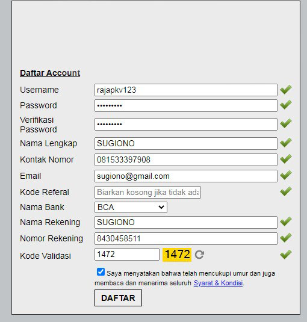

Welcome dan selamat datang di situs kami membahas tentang daftar situs judi qq poker online terpercaya di Indonesia. Halaman ini merupakan halaman yang akan merekomendasikan kepada kalian nama situs poker online terpercaya dari perjudian terbesar pkv games. Berdasarkan pengamatan dan pantauan yang kami lakukan, sudah sangat banyak sekali website perjudian yang ada di Indonesia, untuk itulah sebuah informasi akan sangat dibutuhkan oleh seorang pemula, khususnya yang mencari situs judi poker qq online terpercaya Indonesia.
Sebagaimana kita ketahui bersama, baik itu situs poker online maupun situs qq online termasuk kedalam situs permainan kartu. Website permainan poker akan menawarkan permainan kartu lainnya misalnya dengan menggabungkan permainan kartu domino. Begitu juga sebaliknya dengan situs dominoqq online juga menawarkan permainan kartu remi.
Berdasarkan hasil yang ada dilapangan sendiri, mayoritas dari daftar situs poker online terpercaya tergabung dalam kesatuan Pkvgames ataupun IDNPoker. Kedua jenis server permainan kartu tersebut menjadi server perjudian paling populer dikalangan para penjudi.
| Nama Website | Min Deposit | Review |
|---|---|---|
| AKURATPOKER | 10.000 | Klik Disini |
Nb : Untuk pendaftaran silahkan klik nama (situs poker online terbaik dan terpercaya) pada daftar yang disediakan.
Anda semua pasti sangat mengenal daftar situs judi poker qq online dari table diatas. Karena mereka merupakan situs-situs yang sudah lama berdiri dan dikenal oleh para pemain judi di Indonesia.
Tujuan kami merekomendasikan daftar situs poker online adalah untuk mengingatkan kalian kembali bahwa masih ada situs yang bisa kalian andalkan saat ini. Mereka merupakan bandar judi poker online dengan reputasi terbaik yang mencakup permainan, pelayanan maupun sportifitasnya.
Selain itu, seiring dengan perkembangan teknologi digital, kalian juga akan lebih aman bila memilih situs pkv games sebagai sarana untuk melakukan permainan judi.
Bagi kalian yang ingin tahu apa saja kelebihan yang akan kalian dapatkan setelah bergabung pada situs poker online pkv games, maka simak poin-poin dibawah ini:
Seperti saya katakan, untuk bergabung dengan salah satu agen situs judi poker online, anda bisa mengklik nama dari agen tersebut. Dengan otomatis kami akan mengantar anda pada agen pilihan anda. Dalam proses daftar pkv games, kalian hanya perlu mengisi data anda dengan baik dan benar.
Format pengisian data ini bisa kalian pelajari dari gambar yang saya lampirkan berikut.
Data yang telah diisi dengan benar akan ditandai dengan ceklis hijau di akhir kolom. Nah bila masih ada yang salah, anda wajib memperbaiki hingga benar. Setelah kesemuanya telah kamu isi dengan benar, maka kalian bisa melanjutkan dengan mengklik tombol DAFTAR yang ada pada akhir formulir pendaftaran tersebut.
Agen poker online yang ada saat ini adalah agen situs poker qq pkv games yang menggunakan unag asli. Jadi tata cara bertransaksi pada agen situs poker online pkv games terpercaya dibagi menjadi 2 macam yaitu setor dana dan juga tarik dana. Berikut penjelasannya:
Sebagai tambahan informasi kami merekomendasikan daftar situs poker online deposit pulsa tanpa potongan. Jadi selain uang asli, kalian dapat bermain permainan dengan menggunakan modal pulsa.
Salah satu alasan yang membuat para pemain judi konvensional beralih bermain pada situs poker online adalah alasan keamanan. Adanya aplikasi yang menghubungkan pemain dengan pemain lainnya dipercaya adalah salah satu bentuk inovasi yang sangat bermanfaat. Lewat salah satu aplikasi poker online PKV Games para pemain dapat bermain dengan aman dan nyaman tanpa harus takut akan terciduk
Aplikasi poker online pkv games juga mendukung mereka yang menggunakan smartphone bersistem Android maupun IOS. Didalam aplikasi PKV Games tersebut pemain dapat memainkan semua permainan dengan hanya menggunakan 1 user akun termasuk permainan poker qq online. Dan istimewanya adalah aplikasi Pkv Games ini adalah aplikasi yang sangat ringan. Pemain dapat menginstal aplikasi tersebut dengan kapasitas memory sekitar 15MB.
Untuk link download aplikasi tersebut anda bisa mendapatkannya pada situs judi poker online terbaik secara gratis, atau mereka bisa mendownload nya disini. Bila kalian mengalami kendala dalam melakukan download pkv games maka coba silahkan simak video yang kami lampirkan dibawah ini.